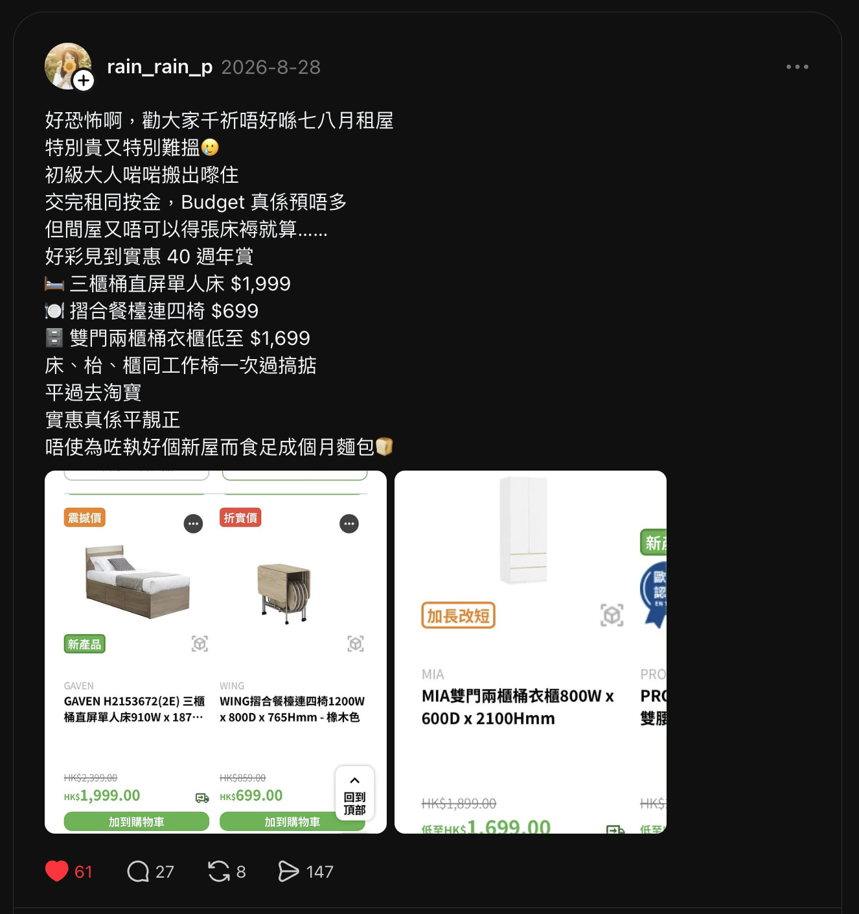
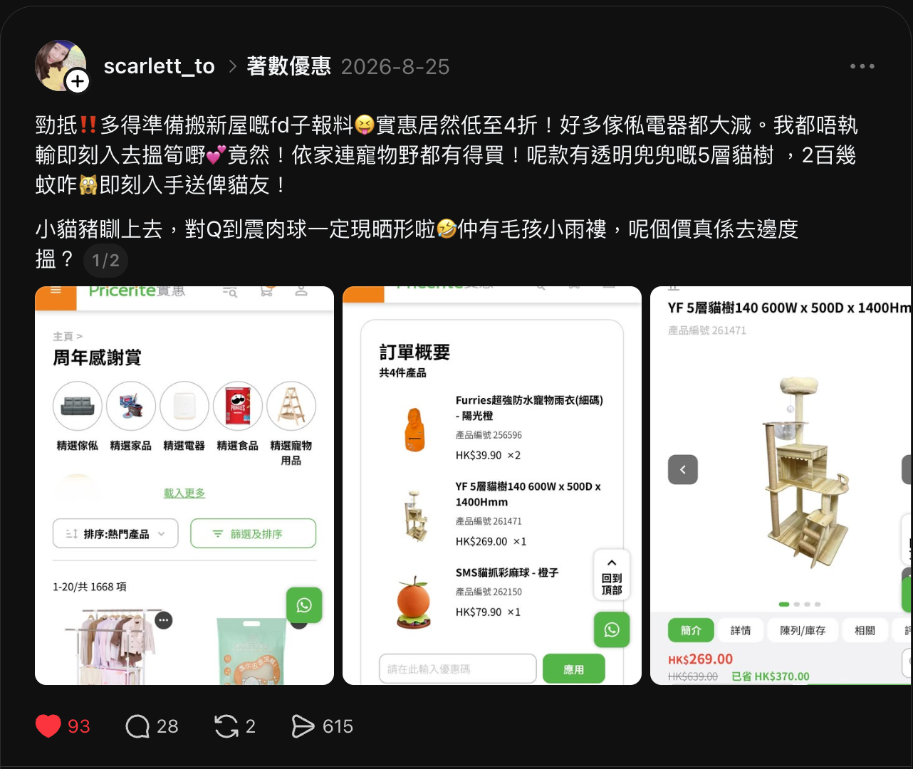
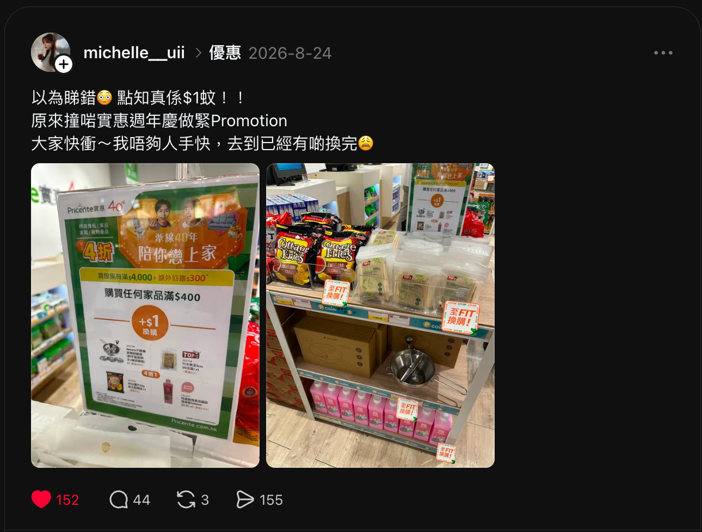
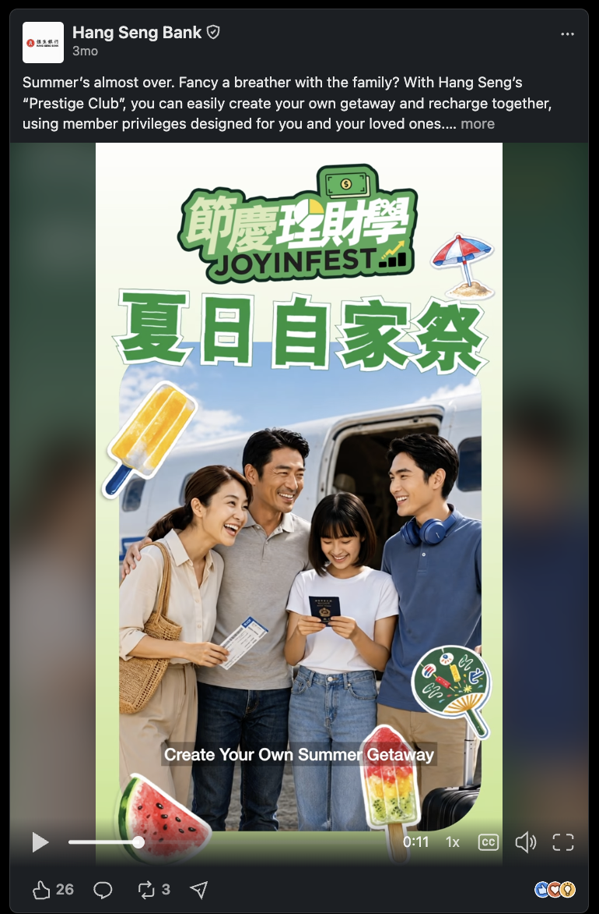
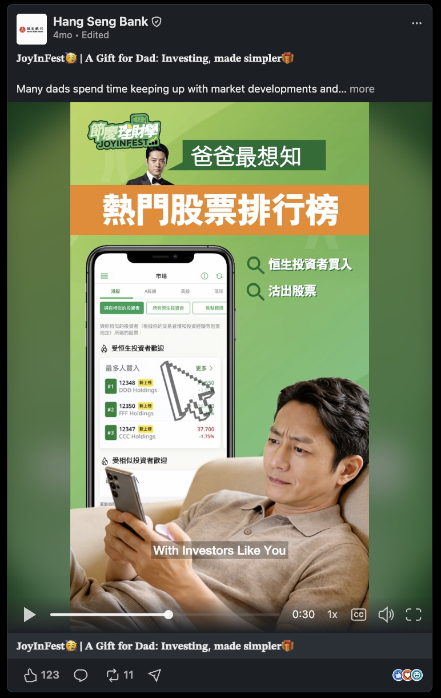

01 / UNDERSTAND
Brand, business goals and audience motivations
Reintroducing a trusted name to a new generation of ambitious learners.
Since 1972, WSE has connected learning English with confidence and possibility.
A more confident voice.
A new opportunity.
A bigger ambition.
Stories, communities and lived experiences now shape how learners choose education brands.
The value remains.
The way people discover it evolves.
Turn Wall Street English’s established strengths into clearer reasons to connect and enquire.
A name people know.
An experience people connect with.
A brand people enquire about.
The goal is not simply to be known. It is to be chosen.
Structured learning. Personal attention. Meaningful progress.
Illustrative positioning concept, not a verified competitor pricing or outcome comparison.
Inspiring stories become stronger when supported by visible learning pathways and progress.
Exam components, practice and personalised feedback help make the academic journey more tangible to learners and parents.
DSE / EMI curriculum mapping, specific improvement metrics and outcomes must be confirmed with the WSE academic team.
Strategy, creative, media, technology and growth — activated as one connected system.
Marketing begins with the brand, the audience and the business opportunity — not a predetermined channel.
MORE REELS?
MORE ADS?
MORE EVENTS?
We don’t start with a channel. We start with the challenge.
Brand, business goals and audience motivations
Ideas, strategy and creative opportunities
Media, content, experience and technology
Measurement and improvement
Threads creator campaign · 10 creator posts
Source: supplied Pricerite Threads tracking sheet. Total recorded post metrics; not unique reach or lead results.



Chapter-led storylines, creative development and visual communication demonstrate how established brands can engage through contemporary storytelling.


Creator-led social campaigns and community engagement.
Brand storytelling and visual communication.
Science-led education content and short-form video storytelling.
Premium art direction, campaign visuals and product communication.
Social creative, retail communication and promotional campaigns.
Website, e-commerce support and digital operations.
Pricerite and Hang Seng samples above are supplied client work references. Other cards use representative sector visuals and project scope summaries.
Reconnecting WSE's heritage, premium learning proposition and academic credibility with today's learners.
More relevant conversations
Stronger reasons to choose
Interest translated into action
Confidence, academic development, DSE learning needs, guidance and future opportunities.
Career progression, practical communication, fluent confidence and personal ambition.
Age eligibility and programme scope for younger schoolchildren require verification with WSE.
Human-centred short-form films and learner transformations
Threads culture, creators and relatable learning moments
Interactive activations and real-world experiences
Academic frameworks and student journey visualised
Lead generation, landing pages and retargeting
Potential creative directions, not committed campaign deliverables.
Click a stage to explore the connection between marketing, automation and admissions.
Illustrative workflow. Actual CRM / SleekFlow / WhatsApp integration depends on WSE systems and permissions.
Before recommending, we listen.
More than telling people about WSE — helping more learners understand why WSE deserves to be their choice.